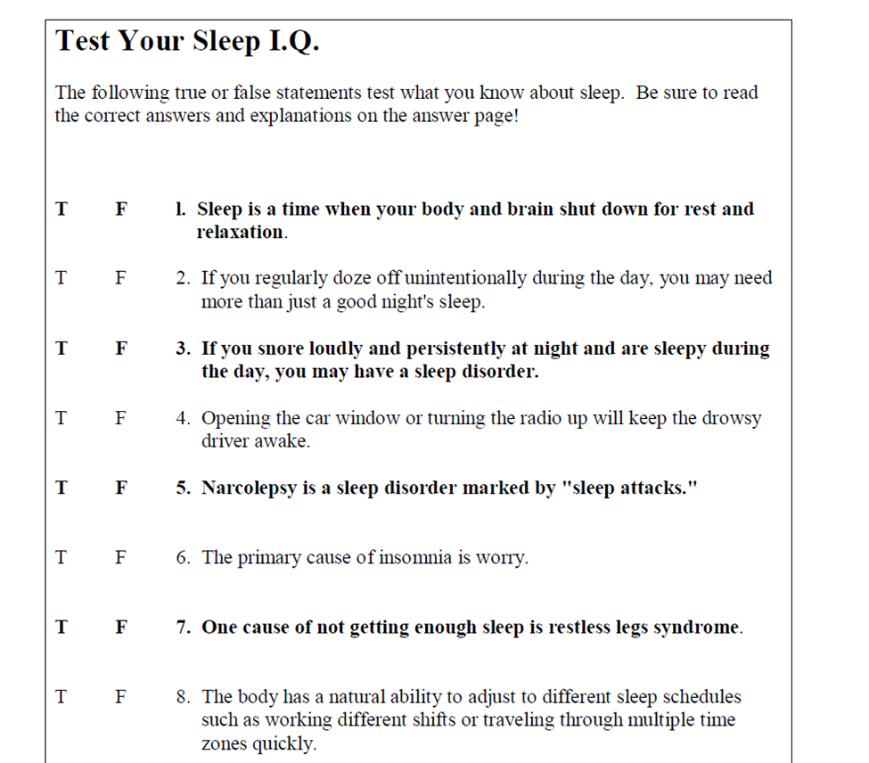
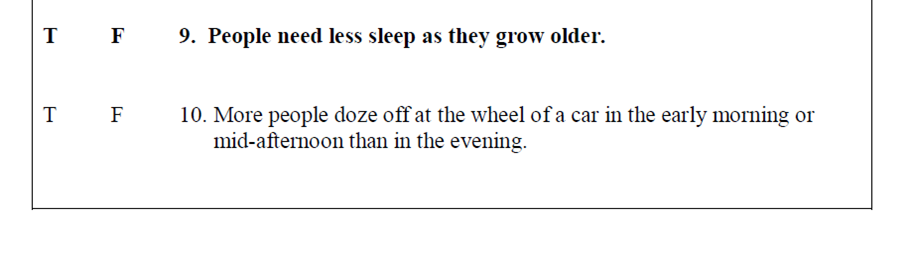
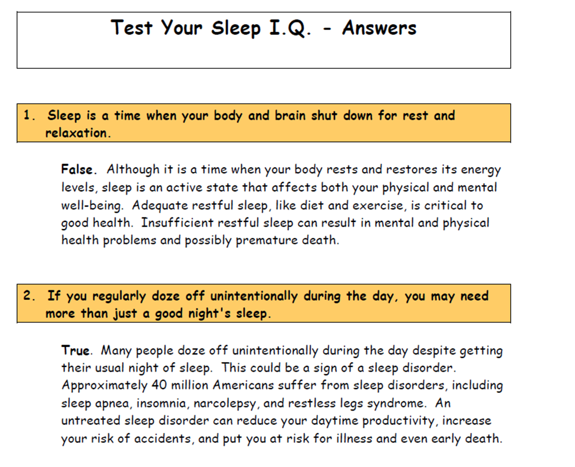
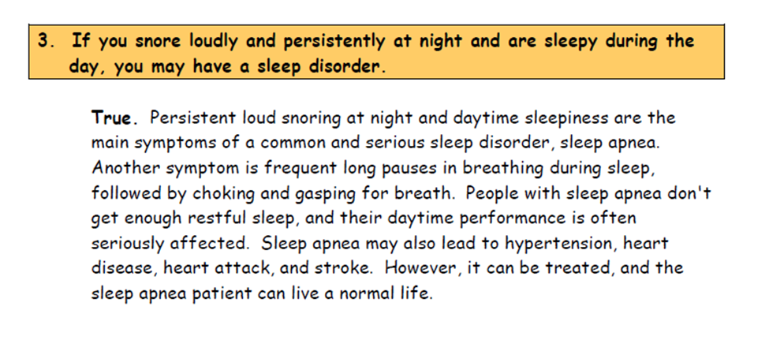
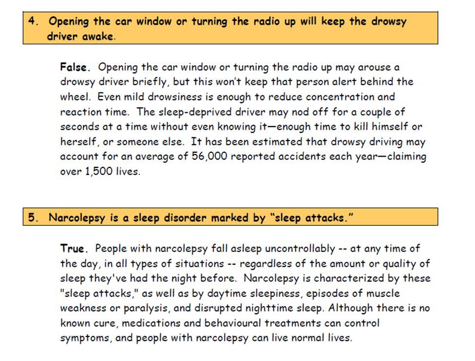
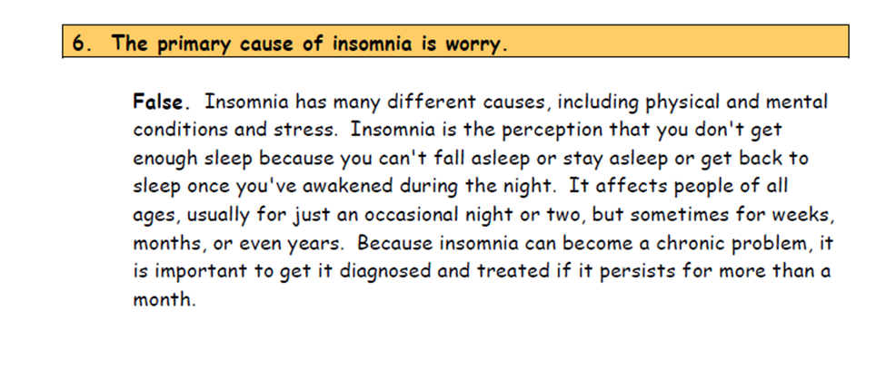
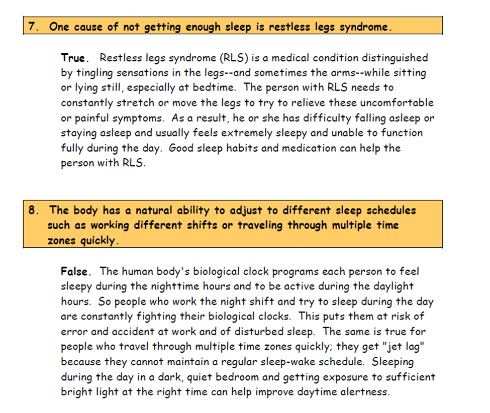
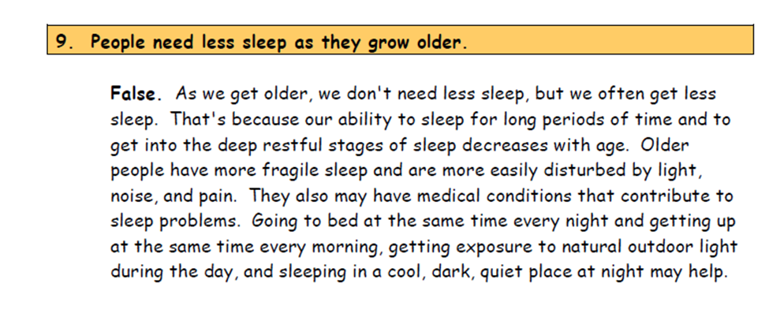
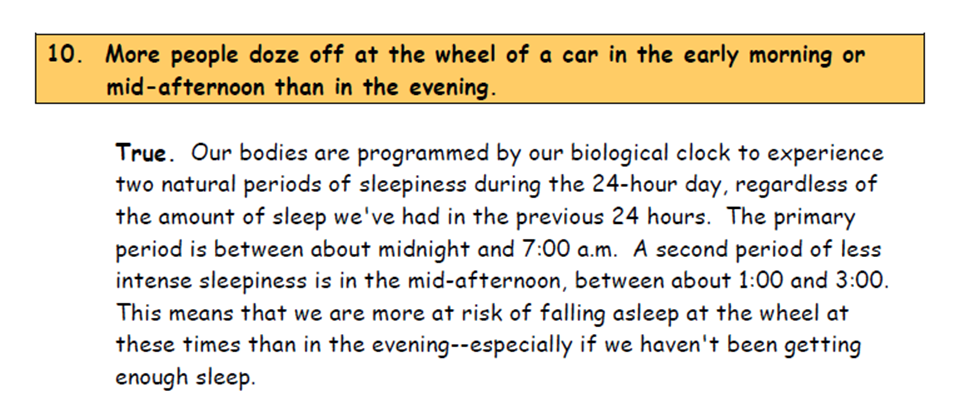

Another non-experimental data collection method is the survey. Like naturalistic observation, surveys are a form of descriptive research. Instead of the researcher gathering information in a natural setting, information is gathered by means of interviews or questionnaires. Interviews or questionnaires commonly include an assortment of forced-choice questions such as True-False or Likert Scales and/or open-ended questions similar to short answer questions.
Strengths of Surveys: When psychologists are interested in collecting data on characteristics of behaviour that are difficult to observe directly (such as thoughts about suicide), surveys can be useful tools. Surveys are also appropriate when many subjects must be interviewed. Attitude and opinion surveys are popular in areas ranging from political preference polling to taste tests and food preferences!
Limitations of Surveys: With any tool that requires the subject to self-report, the possibilities of intentional deception, poor memory, or even simple misunderstanding of questions are always present. Questions may also be intentionally misleading. These can contribute to inaccuracies in data. Like naturalistic observation, this method of research is descriptive, not explanatory, and thus does not offer any insights into cause-and-effect relationships.
Take a survey on sleep. You will be using this survey on friends and family in Module Three!


Source: Survey and answers reprinted with permission from the National Institute of Health. http://www.nhlbi.nih.gov/sleep







survey: a research technique in which data is gathered from questionnaires or interviews